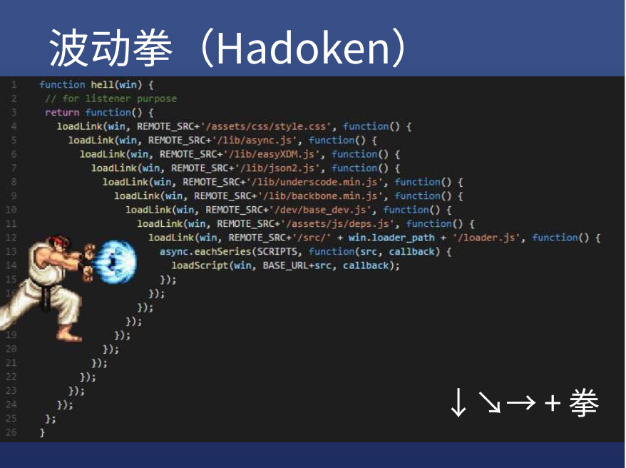

异步与Promise
异步与 Promise
同步、异步、回调的概念与关系
什么是同步？
- 如果能直接拿到结果，就是同步
- 例如：你在医院挂号，你拿到号才会离开窗口
- 同步任务可能消耗 10ms，也可能需要 3 秒
- 总之不拿到结果你是不会离开做别的事情的
什么是异步？
- 如果不能直接拿到结果，就是异步
- 例如：你在餐厅门口等位，人太多，你拿到号可以去逛街
- 什么时候才能真正吃饭呢？
- 你可以每十分钟去餐厅问一下——这是轮询
- 你也可以扫码用微信接收通知——这是回调
异步举例-以 AJAX 为例
- request.send()之后，并不能直接得到 response
- 不信可以 console.log(request.response)试试
- 必须等到 readyState 变为 4 后，浏览器回头调用 request.onreadystatechange 函数
- 我们才能得到 request.response
- 这跟餐厅给你发送微信提醒的过程是类似的
什么是回调 callback
- 写了却不调用，给别人调用的函数，就是回调
- 你写给自己用的函数不是回调，你写给别人用的函数才是回调
- request.onreadystatechange 就是我写给浏览器调用的，意思就是你（浏览器）回头调用一下这个函数
回调举例
把函数 1 给另一个函数 2 调用：
function f1(){ } function f2(fn) { fn() } f2(f1)
- 分析：
- 我调用 f1 没有？答：没有
- 我把 f1 传给 f2（别人）了么？答：传了
- f2 调用 f1 没有？答：f2 调用了 f1
- 那么 f1 是不是我写给 f2 调用的函数？答：是
- 所以 f1 是回调
异步和回调的关系
- 关联
- 异步任务需要在得到结果时通知 JS 来拿结果
- 怎么通知呢？
- 可以让 JS 写一个函数地址（电话号码）给浏览器
- 异步任务完成时浏览器调用该函数地址即可（拨打电话）
- 同时把结果作为参数传给该函数（电话里说可以来吃了）
- 这个函数是我写给浏览器调用的，所以是回调函数
- 区别
- 异步任务需要用到回调函数来通知结果，也可以不用回调函数（用轮询）
- 同样回调函数不一定只用在异步任务里，还可以用在同步任务里；
array.forEach(n=>console.log(n))就是同步回调(括号里边的是回调)
- 关联
怎么判断一个函数是同步还是异步？
- 如果一个函数的返回值处于以下三个东西内部，那么这个函数就是异步函数：
- setTimeout
- AJAX
- AddEventListener
- 还有其他 API 是异步的，后边另行说明
- 只有傻逼前端才把 AJAX 设置为同步的，这样做会使请求期间页面卡住
- 如果一个函数的返回值处于以下三个东西内部，那么这个函数就是异步函数：
摇骰子
举例：
function shakeDice(){ setTimeout(()=>{ //箭头函数 return parseInt(Math.random()*6) + 1 },1000) //return undefined }分析：
- shakeDice()函数没有写 return，那就是 return undefined
- 箭头函数里有 return，返回真正的结果
- 所以这就是一个异步函数/异步任务
总结
- 异步任务不能直接拿到结果（同步任务可以直接拿到结果）
- 所以我们传一个回调函数给异步任务
- 异步任务完成时调用回调函数
- 调用的时候把结果作为参数
Promise
为什么要用 Promise？
- 为了解决“异步任务有两个结果（成功或失败）的问题”；
- 传统解决方法有两种：
- 方法一：回调接受两个参数；
- 方法二：搞两个回调；
而这两种传统方法都不可避免的存在一些问题：
- 不规范，名称五花八门，有人用 success+error,有人用 success+fail,有人用 done+fail
- 容易出现回调地狱，代码变得看不懂
- 很难进行错误处理
回调地狱举例：
//假设getUser是一个异步函数，接受回调函数 getUser(user=>{ getGroups(user,(groups)=>{ groups.forEach((g)=>{ g.filter(x=>x.ownerId === user.id) .forEach(x=>console.log(x)) }) }) })//这还只是四层回调，你能想像20层回调么？

未使用 Promise 方法的代码：
ajax = (method,url,options)=>{ //析构赋值，相当于：const success = options.success;const fail = options.fail; const{success,fail} = options const request = new XMLHttpRequest()//创建对象 request.open(method,url)//调用open方法 //监听对象的 onreadystatechange 事件： request.onreadystatechange = ()=>{ if(request.readyState === 4){ //成功就调用 success,失败就调用fail if(request.status < 400){ success.call(null,request.response) }else if(request.status >=400){ fail.call(null,request,request.status) } } } request.send()//发送请求 } ajax('get','/xxx',{ //左边是 function 缩写，右边是箭头函数： success(response){},fail:(request,status)=>{} })使用了 Promise 方法的代码：
ajax = (method,url,options)=>{ return new Promise((resolve,reject)=>{ //析构赋值，相当于：const success = options.success;const fail = options.fail; const{success,fail} = options const request = new XMLHttpRequest()//创建对象 request.open(method,url)//调用open方法 //监听对象的 onreadystatechange 事件： request.onreadystatechange = ()=>{ if(request.readyState === 4){ //成功就调用 resolve,失败就调用reject if(request.status < 400){ resolve.call(null,request.response) }else if(request.status >=400){ reject.call(null,request) } } } request.send()//发送请求 }) } ajax('get','/xxx').then((response)=>{},(request,status)=>{})背下这五个单词即可：
return new Promise((resolve,reject)=>{})小结：
- 第一步：
- return new Promise((resolve,reject)=>{…})
- 任务成功则调用 resolve(result)
- 任务失败则调用 reject(error)
- resolve 和 reject 会再去调用成功和失败函数
- 第二步：
- 使用.then(success,fail)传入成功和失败的函数
- 第一步：
其他知识
- 我们封装的 ajax 的缺点
- post 无法上传数据
- 不能设置请求头
- 怎么解决呢？——使用 jQuery.ajax 或者 axios(这个库比 jQuery 逼格高)
- 封装！封装！封装！
- 初级程序员学习 API(包括 Vue/React 的 API)
- 中级程序员学习如何封装
- 高级程序员造轮子